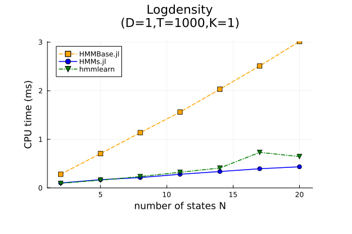
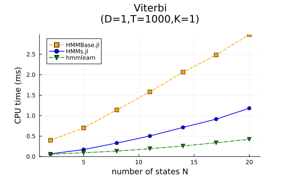
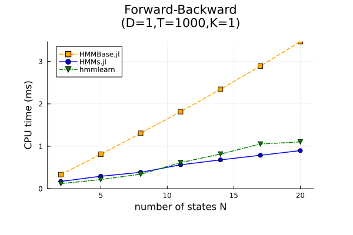
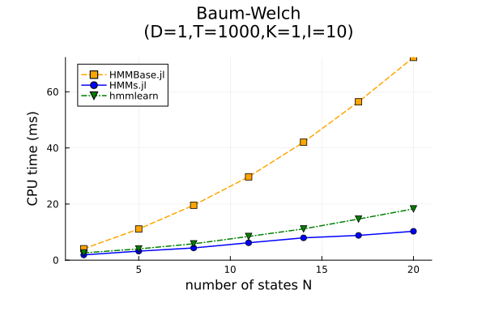
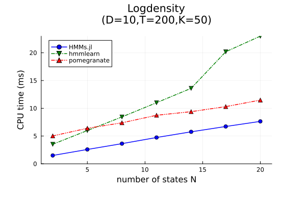
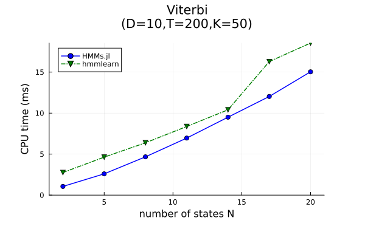
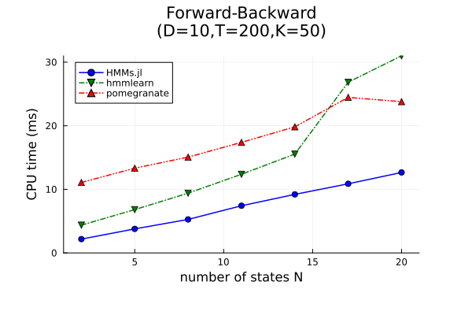
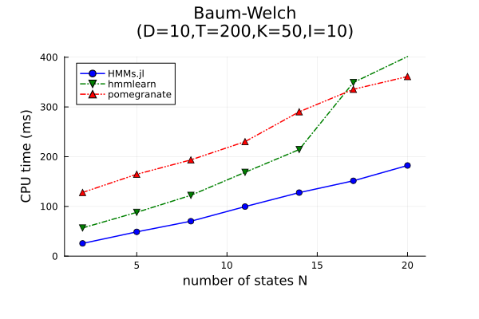

Alternatives - performance
We compare performance among the following packages:
- HiddenMarkovModels.jl (abbreviated to HMMs.jl)
- HMMBase.jl
- hmmlearn
- pomegranate
The test case is an HMM with diagonal multivariate normal observations.
N: number of statesD: dimension of the observationsT: trajectory lengthK: number of trajectoriesI: number of Baum-Welch iterations
The benchmarks are computationally expensive and we only run them once for each new release. If you don't see any plots below and the links are broken, you are probably on the dev documentation: go to the stable documentation instead.
Reproducibility
These benchmarks were generated in the following environment: setup.txt.
If you want to run them on your machine:
Clone the HiddenMarkovModels.jl repository
Open a Julia REPL at the root
Run the following commands
include("benchmark/run_benchmarks.jl") include("benchmark/process_benchmarks.jl")
Remarks
Julia-to-Python overhead
Since the Python packages are called from Julia with PythonCall.jl, we pay a small overhead that is hard to quantify. On the plots, we compensate it by subtracting the runtime of the same algorithm for the smallest instance (N=1, D=1, T=2, K=1, I=1) from all Python-generated curves.
Allocations
A major bottleneck of performance in Julia is memory allocations. The benchmarks for HMMs.jl thus employ a custom implementation of diagonal multivariate normals, which is entirely allocation-free.
This partly explains the performance gap with HMMBase.jl as the dimension D grows beyond 1. Such a trick is also possible with HMMBase.jl, but more demanding since it requires subtyping Distribution from Distributions.jl, instead of just implementing DensityInterface.jl.
Parallelism
The packages we include have different approaches to parallelism, which can bias the evaluation in complex ways:
| Package | States N | Observations D | Sequences K |
|---|---|---|---|
| HMMs.jl | LinearAlgebra[2] | depends[2] | Threads[1] |
| HMMBase.jl | - | depends[2] | - |
| hmmlearn | NumPy[2] | NumPy[2] | NumPy[2] |
| pomegranate | PyTorch[3] | PyTorch[3] | PyTorch[3] |
We report each number of threads in setup.txt. Since OpenBLAS threads have negative interactions with Julia threads, we run the Julia benchmarks with a single OpenBLAS thread.
Numerical results
Low dimension
Full benchmark logs: low_dim.csv.
   
Here, pomegranate is not included because it is much slower on very small inputs.
High dimension
Full benchmark logs: high_dim.csv.
   
Here, HMMBase.jl is not included because it does not support multiple sequences.